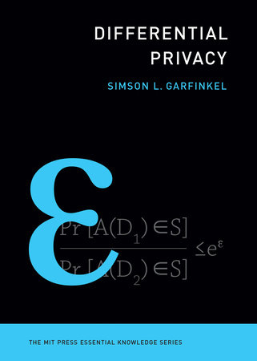

Differential Privacy - Simson L. Garfinkel
Foundations, applications, and policy implications of the gold standard in data privacy

Review
This monograph provides a non-mathematical yet rigorous conceptual introduction to the theory and application of differential privacy (DP). It is part of MIT Press’s Essential Knowledge series and is explicitly written for a general audience, without requiring prior familiarity with statistics, mathematics, or computer science.
Rather than offering algorithmic recipes or formal proofs, the book aims to:
- Build intuitive understanding of the DP paradigm.
- Trace the historical development of the field.
- Contextualize DP through real-world implementations (notably the 2020 U.S. Census).
- Examine the philosophical and policy implications of deploying DP systems.
Content summary
Conceptual foundations
Garfinkel introduces differential privacy as a mathematically formal approach to privacy protection, contrasted with heuristic or “best effort” techniques such as de-identification and data masking.
Key theoretical components are explained using analogies:
- Sensitivity and the use of calibrated noise via the Laplace or Gaussian mechanisms.
- The privacy loss budget (ε) and the implications of tuning it.
- Composability and how DP offers provable guarantees even under repeated queries.
- The mosaic effect, demonstrating how auxiliary data enables reidentification even from aggregated or anonymized data.
Although mathematical notation is absent, the conceptual treatment aligns with the formal definitions of (ε, δ)-differential privacy as used in foundational literature.
Historical and institutional context
The author documents the trajectory of DP from its introduction by Dwork, McSherry, Nissim, and Smith (2006) to its adoption in high-stakes settings such as:
- The U.S. Census Bureau’s Disclosure Avoidance System.
- Google’s and Apple’s telemetry systems.
- NIST’s evolving standards for privacy-enhancing technologies (e.g., SP 800-188).
The tension between statistical utility and privacy guarantees is explored through case studies, such as the controversy surrounding the use of DP in the 2020 Census.
Critique and alternatives
Garfinkel acknowledges the limitations of DP:
- Not suitable for non-tabular data (e.g., video, audio).
- Noise injection can degrade data utility, especially for small subpopulations.
- DP is often challenging to tune, and the setting of ε is as much a policy decision as a technical one.
He contrasts DP with legacy disclosure limitation methods (e.g., k-anonymity, cell suppression, top-coding), arguing that while they lack formal guarantees, they may provide better practical utility in some scenarios.
Strengths:
- Clarity of exposition: Abstract concepts are explained using accessible examples (e.g., student grades, public statistics).
- Policy relevance: The author’s experience at NIST and the Census Bureau enables an authoritative treatment of institutional use cases.
- Balanced perspective: Both the promises and criticisms of DP are articulated, with references to academic and legal debates (e.g., lawsuits surrounding the 2020 Census).
Limitations:
- Lack of formalism: No mathematical definitions, algorithms, or implementation details are presented.
- Limited scope of mechanisms: The book focuses almost exclusively on the central differential privacy model, with minimal treatment of local DP, privacy accounting methods (e.g., Rényi DP), or advanced techniques like privacy amplification.
- No discussion of implementation frameworks: Libraries like Google’s DP library, OpenDP, and SmartNoise are only briefly mentioned in the notes, with no comparative discussion.
Recommendation
This book is recommended as a policy- and systems-oriented primer for:
- Privacy professionals and data protection officers.
- Statisticians and social scientists new to formal privacy models.
- Government and industry decision-makers evaluating privacy technologies.
It is not a substitute for a formal or computational introduction for practitioners seeking to implement DP mechanisms in production systems.
Verdict
Simson L. Garfinkel’s Differential Privacy is an essential conceptual guide that democratizes access to one of the most profound ideas in data privacy. While limited in technical depth, it succeeds in making the case for DP’s significance and encourages broader adoption and informed critique.
Info
| Subject | Content |
|---|---|
| Title | Differential Privacy |
| Year | 2025 |
| Author | Simson L. Garfinkel |
| Publisher | The MIT Press |
| Language | English |
| Topics | Differential privacy, Statistical disclosure limitation, Privacy-preserving data analysis, Data governance |
| Downloads | PDF | CC BY-NC-ND 4.0 |
| Other links | Publisher book page |
| ISBN | 9780262382168 |
| Buy online | MIT Press |